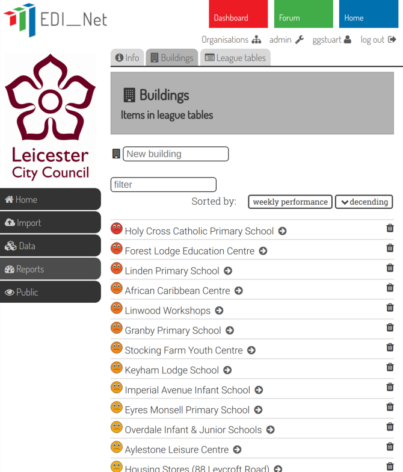

Usable information
The EDI-Net approach is to maximise the availability of usable information extracted continuously from raw utility data streams. Our energy management analytics system draws raw utility data (i.e. smart meter / AMR data) from your existing data management systems. We start with large volumes of raw data and generate information in a simplified, aggregated form. Simple summary reports provide a means for the expert analyst to focus their attention on those buildings where usage is diverging from the expectation.

Systematic and targeted
The interface is designed specifically to support a reactive approach to pinpointing low-cost, high impact operational issues such as the leaks, faults and other changes which are constantly occurring in a large building portfolio. It has been shown to highlight issues which have saved at least €50,000 in one City Council in just a few months. These issues would not have been detected without the system in place.
 Crucially, the system does this whilst simultaneously reducing the analyst time required. The energy manager need only spend a few minutes each day reviewing the entire building portfolio. Without this facility it can take several weeks of dedicated analyst time to achieve the same result. So the system increases the efficiency of the energy management function by optimising the exploitation of high-resolution utility data.
In addition, the system can be used to 'publish' live results in simple league tables for a non-technical audience. The friendly smiley-face league tables can be understood easily by building users with no requirement to understand technical details. We have experience of this with children as young as six via the eco-schools initiative. Last year, 100 Leicester schools participated in energy saving competitions using the EDI-Net system to monitor their own progress relative to other schools. The system also provides users with more detailed technical reports with a simple click. So users who want more detail can click through whilst users who just want to know the broad picture can access that with no effort.
Decentralised monitoring
A further key potential benefit of the system is that it can support a more decentralised energy management strategy. The potential is to make links between the knowledge and enthusiasm of building users and the technical expertise of energy and finance professionals. Used carefully the system can be truly disruptive by providing the basis for developing distributed and transparent energy management workflows.

Collaborate
By enabling building users to engage with their own building energy performance and to actively collaborate with the central energy management team, EDI-Net provides a pathway to developing a more integrated, transparent and efficient energy management function. This approach has the potential to significantly increase the capacity of public authorities to deliver sustainable energy policy. This is also a timely opportunity to respond to the current enthusiasm for action on climate change.